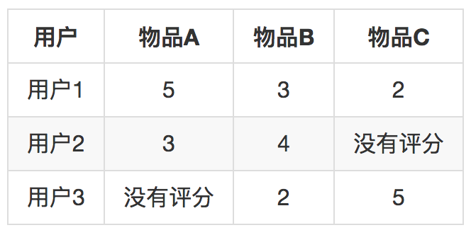
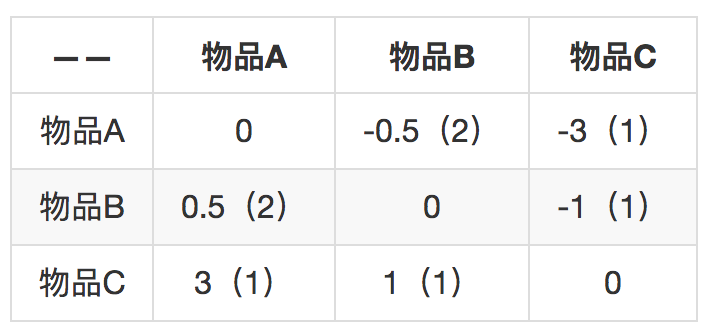

- 00 开篇词 用知识去对抗技术不平等.md.html
- 01 你真的需要个性化推荐系统吗_.md.html
- 02 个性化推荐系统有哪些绕不开的经典问题？.md.html
- 03 这些你必须应该具备的思维模式.md.html
- 04 画鬼容易画人难：用户画像的“能”和“不能”.md.html
- 05 从文本到用户画像有多远.md.html
- 06 超越标签的内容推荐系统.md.html
- 07 人以群分，你是什么人就看到什么世界.md.html
- 08 解密“看了又看”和“买了又买”.md.html
- 09 协同过滤中的相似度计算方法有哪些.md.html
- 10 那些在Netflix Prize中大放异彩的推荐算法.md.html
- 11 Facebook是怎么为十亿人互相推荐好友的.md.html
- 12 如果关注排序效果，那么这个模型可以帮到你.md.html
- 13 经典模型融合办法：线性模型和树模型的组合拳.md.html
- 14 一网打尽协同过滤、矩阵分解和线性模型.md.html
- 15 深度和宽度兼具的融合模型 Wide and Deep.md.html
- 16 简单却有效的Bandit算法.md.html
- 17 结合上下文信息的Bandit算法.md.html
- 18 如何将Bandit算法与协同过滤结合使用.md.html
- 19 深度学习在推荐系统中的应用有哪些_.md.html
- 20 用RNN构建个性化音乐播单.md.html
- 21 构建一个科学的排行榜体系.md.html
- 22 实用的加权采样算法.md.html
- 23 推荐候选池的去重策略.md.html
- 24 典型的信息流架构是什么样的.md.html
- 25 Netflix个性化推荐架构.md.html
- 26 总览推荐架构和搜索、广告的关系.md.html
- 27 巧妇难为无米之炊：数据采集关键要素.md.html
- 28 让你的推荐系统反应更快：实时推荐.md.html
- 29 让数据驱动落地，你需要一个实验平台.md.html
- 30 推荐系统服务化、存储选型及API设计.md.html
- 31 推荐系统的测试方法及常用指标介绍.md.html
- 32 道高一尺魔高一丈：推荐系统的攻防.md.html
- 33 和推荐系统有关的开源工具及框架介绍.md.html
- 34 推荐系统在互联网产品商业链条中的地位.md.html
- 35 说说信息流的前世今生.md.html
- 36 组建推荐团队及工程师的学习路径.md.html
- 加餐 推荐系统的参考阅读.md.html
- 结束语 遇“荐”之后，江湖再见.md.html
- 捐赠
08 解密“看了又看”和“买了又买”
不管你有没有剁过手，你对“看了这个商品的还看了”这样的推荐形式一定不陌生。无论是猫还是狗，或者是其他电商网站，这样的推荐产品可以说是推荐系统的标配了。
类似的还有，如点评标记类网站的“喜欢了这部电影的还喜欢了”，社交媒体网站的“关注了这个人还关注了”，这些都只是文案类似，动词不同而已。
这样的推荐形式背后都是来自一个古老的推荐算法，叫做基于物品的协同过滤，通常也被叫作Item-Based，因为后者更容易搜索到相关的文章，所以被更多地提及。
如果做推荐系统不知道“基于物品的协同过滤”，那等同于做程序员不懂得冒泡排序。这个朴素的算法，就像是乔峰大战聚贤庄所用的“太祖长拳”一样，简单直接有效，读过高中就懂，用得好也能够战倒绝大多数的武林豪杰。今天，我就来和你聊聊这个朴素的算法。
基于物品（Item-Based）的八卦
基于物品的协同过滤算法诞生于1998年，是由亚马逊首先提出的，并在2001年由其发明者发表了相应的论文（ Item-Based Collaborative Filtering Recommendation Algorithms ）。
这篇论文在Google学术上引用数已近7000，并且在WWW2016大会上被授予了“时间检验奖”，颁奖词是：“这篇杰出的论文深深地影响了实际应用”。历经了15年后仍然在发光发热，这个奖它显然受之无愧。
虽然今天各家公司都在使用这个算法，好像它是一个公共资源一样，然而并不是这样，亚马逊早在1998年，也就是论文发表的三年前就申请了专利。
讲完了算法的八卦，开始说正事了。
基于物品（Item-Based）原理
在基于物品的协同过滤出现之前，信息过滤系统最常使用的是基于用户的协同过滤。基于用户的协同过滤首先计算相似用户，然后再根据相似用户的喜好推荐物品，这个算法有这么几个问题：
- 用户数量往往比较大，计算起来非常吃力，成为瓶颈；
- 用户的口味其实变化还是很快的，不是静态的，所以兴趣迁移问题很难反应出来；
- 数据稀疏，用户和用户之间有共同的消费行为实际上是比较少的，而且一般都是一些热门物品，对发现用户兴趣帮助也不大。
和基于用户的不同，基于物品的协同过滤首先计算相似物品，然后再根据用户消费过、或者正在消费的物品为其推荐相似的，基于物品的算法怎么就解决了上面这些问题呢？
首先，物品的数量，或者严格的说，可以推荐的物品数量往往少于用户数量；所以一般计算物品之间的相似度就不会成为瓶颈。
其次，物品之间的相似度比较静态，它们变化的速度没有用户的口味变化快；所以完全解耦了用户兴趣迁移这个问题。
最后，物品对应的消费者数量较大，对于计算物品之间的相似度稀疏度是好过计算用户之间相似度的。
根据我在上一篇文章中所说，协同过滤最最依赖的是用户物品的关系矩阵，基于物品的协同过滤算法也不能例外，它的基本步骤是这样的：
- 构建用户物品的关系矩阵，矩阵元素可以是用户的消费行为，也可以是消费后的评价，还可以是对消费行为的某种量化如时间、次数、费用等；
- 假如矩阵的行表示物品，列表示用户的话，那么就两两计算行向量之间的相似度，得到物品相似度矩阵，行和列都是物品；
- 产生推荐结果，根据推荐场景不同，有两种产生结果的形式。一种是为某一个物品推荐相关物品，另一种是在个人首页产生类似“猜你喜欢”的推荐结果。不要急，稍后我会分别说。
计算物品相似度
前面较为笼统地说要计算物品之间的相似度，现在详细说说这块。从用户物品关系矩阵中得到的物品向量长什么样子呢？我来给你描述一下：
- 它是一个稀疏向量；
- 向量的维度是用户，一个用户代表向量的一维，这个向量的总共维度是总用户数量；
- 向量各个维度的取值是用户对这个物品的消费结果，可以是行为本身的布尔值，也可以是消费行为量化如时间长短、次数多少、费用大小等，还可以是消费的评价分数；
- 没有消费过的就不再表示出来，所以说是一个稀疏向量。
接下来就是如何两两计算物品的相似度了，一般选择余弦相似度，当然还有其他的相似度计算法方法也可以。计算公式如下：
\[sim(i,j) = \\frac{\\sum_{k=1}^{n}{R_{ik} \* R_{jk}}} { \\sqrt{\\sum_{k=1}^{n}{R_{ik}^{2}}} \\sqrt{\\sum_{k=1}^{n}{R_{jk}^{2}}}}\]
用文字解释一下这个公式：
分母是计算两个物品向量的长度，求元素值的平方和再开方。分子是两个向量的点积，相同位置的元素值相乘再求和。
很简单，因为这个公式出自中学数学课本，所以我刚才说读过高中就懂。
这个公式的物理意义就是计算两个向量的夹角余弦值，相似度为1时，对应角度是0，好比时如胶似漆，相似度为0时，对应角度为90度，毫不相干，互为路人甲。
看上去计算量很大，貌似每一个求和的复杂度都是和向量维度、也就是用户数量一样的。但是别忘了，前面我说过他们都是稀疏向量，也就是向量中绝大多数值都是0，求和时不用算，点积时更不用算，甚至求点积时只用管两个物品的公共用户，只是少许几个乘积而已。
物品之间的相似度计算是这个算法最可以改进的地方。通常的改进方向有下面两种。
1. 物品中心化。把矩阵中的分数，减去的是物品分数的均值；先计算每一个物品收到评分的均值，然后再把物品向量中的分数减去对应物品的均值。这样做的目的是什么呢？去掉物品中铁杆粉丝群体的非理性因素，例如一个流量明星的电影，其脑残粉可能会集体去打高分，那么用物品的均值来中心化就有一定的抑制作用。
2. 用户中心化。把矩阵中的分数，减去对应用户分数的均值；先计算每一个用户的评分均值，然后把他打过的所有分数都减去这个均值。
这样做的目的又是什么呢？每个人标准不一样，有的标准严苛，有的宽松，所以减去用户的均值可以在一定程度上仅仅保留了偏好，去掉了主观成分。
上面提到的相似度计算方法，不只是适用于评分类矩阵，也适用于行为矩阵。所谓行为矩阵，即矩阵元素为0或者1的布尔值，也就是在前面的专栏中讲过的隐式反馈。隐式反馈取值特殊，有一些基于物品的改进推荐算法无法应用，比如著名的Slope One算法。
计算推荐结果
在得到物品相似度之后，接下来就是为用户推荐他可能会感兴趣的物品了，基于物品的协同过滤，有两种应用场景。
第一种属于TopK推荐，形式上也常常属于类似“猜你喜欢”这样的。
出发方式是当用户访问首页时，汇总和“用户已经消费过的物品相似”的物品，按照汇总后分数从高到低推出。汇总的公式是这样的：
\[\\hat{R_{ui}} = \\frac{\\sum_{j=1}^{m}{sim(i,j)\* R_{uj}}}{\\sum_{j=1}^{m}{sim(i,j)}}\]
这个公式描述一下，核心思想就和基于用户的推荐算法一样，用相似度加权汇总。
要预测一个用户u对一个物品i的分数，遍历用户u评分过的所有物品，假如一共有m个，每一个物品和待计算物品i的相似度乘以用户的评分，这样加权求和后，除以所有这些相似度总和，就得到了一个加权平均评分，作为用户u对物品i的分数预测。
和基于物品的推荐一样，我们在计算时不必对所有物品都计算一边，只需要按照用户评分过的物品，逐一取出和它们相似的物品出来就可以了。
这个过程都是离线完成后，去掉那些用户已经消费过的，保留分数最高的k个结果存储。当用户访问首页时，直接查询出来即可。
第二种属于相关推荐，也就是我们今天专栏题目所指的场景。
这类推荐不需要提前合并计算，当用户访问一个物品的详情页面时，或者完成一个物品消费的结果面，直接获取这个物品的相似物品推荐，就是“看了又看”或者“买了又买”的推荐结果了。
Slope One算法
经典的基于物品推荐，相似度矩阵计算无法实时更新，整个过程都是离线计算的，而且还有另一个问题，相似度计算时没有考虑相似度的置信问题。例如，两个物品，他们都被同一个用户喜欢了，且只被这一个用户喜欢了，那么余弦相似度计算的结果是1，这个1在最后汇总计算推荐分数时，对结果的影响却最大。
Slope One算法针对这些问题有很好的改进。在2005年首次问世，Slope One算法专门针对评分矩阵，不适用于行为矩阵。Slope One算法计算的不是物品之间的相似度，而是计算的物品之间的距离，相似度的反面。举个例子就一目了然，下面是一个简单的评分矩阵：

这个矩阵反应了这些事实：用户1给物品A、B、C都评分了，分别是5，3，2；用户2给物品A、B评分了，分别是3、4；用户3给物品B、C评分了，分别是2、5。现在首先来两两计算物品之间的差距：

括号里表示两个物品的共同用户数量，代表两个物品差距的置信程度。比如物品A和物品B之间的差距是0.5，共同用户数是2，反之，物品B和物品A的差距是-0.5，共同用户数还是2。知道这个差距后，就可以用一个物品去预测另一个物品的评分。
如果只知道用户3给物品B的评分是2，那么预测用户3给物品A的评分呢就是2.5，因为从物品B到物品A的差距是0.5。
在此基础上继续推进，如果知道用户给多个物品评分了，怎么汇总这些分数呢？
方法是把单个预测的分数按照共同用户数加权求平均。比如现在知道用户3不但给物品B评分为2，还给物品C评分为5，物品B对物品A的预测是2.5分，刚才计算过了，物品C给物品A的预测是8分，再加权平均。
\[ \\frac{8\*1 + 2.5 \* 2 }{(1+2)} = 4.33 \]
就得到了推荐分数为4.33分。是不是很简单？
总结
今天我们在基于用户的协同过滤基础上介绍了比较常见的一个算法：基于物品的协同过滤。这个方法常常在电商网站上见到，“买了又买”“看了又看”这样的相关推荐，都是由这个推荐算法产生。
最后我们介绍了一个改良版的基于物品推荐算法Slope One。这里也留下了一个问题给你：为什么说Slope One可以做到在线更新呢？欢迎留言讨论。

© 2019 - 2023 Liangliang Lee. Powered by gin and hexo-theme-book.